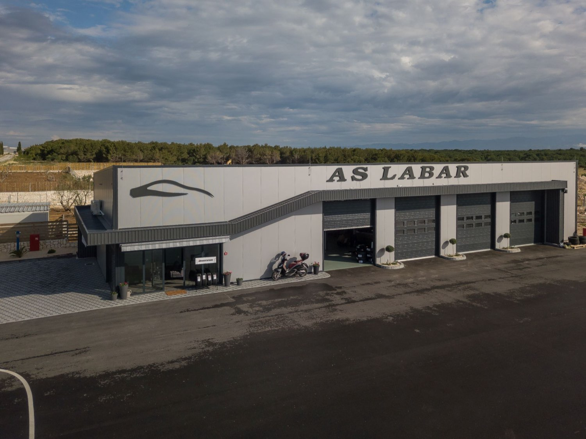
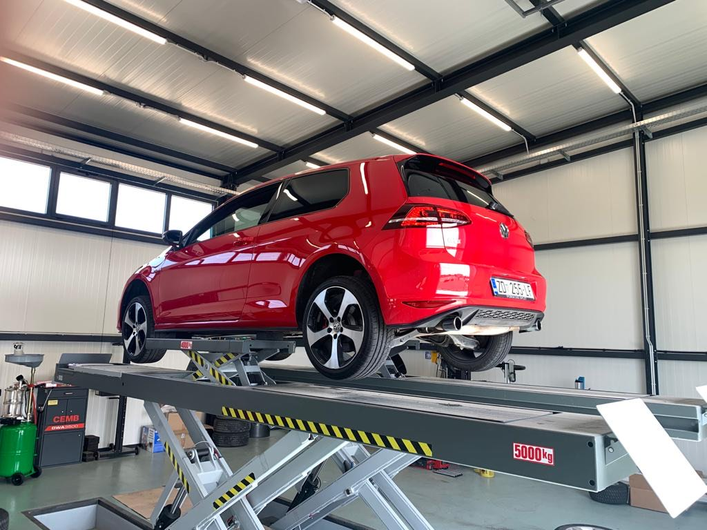
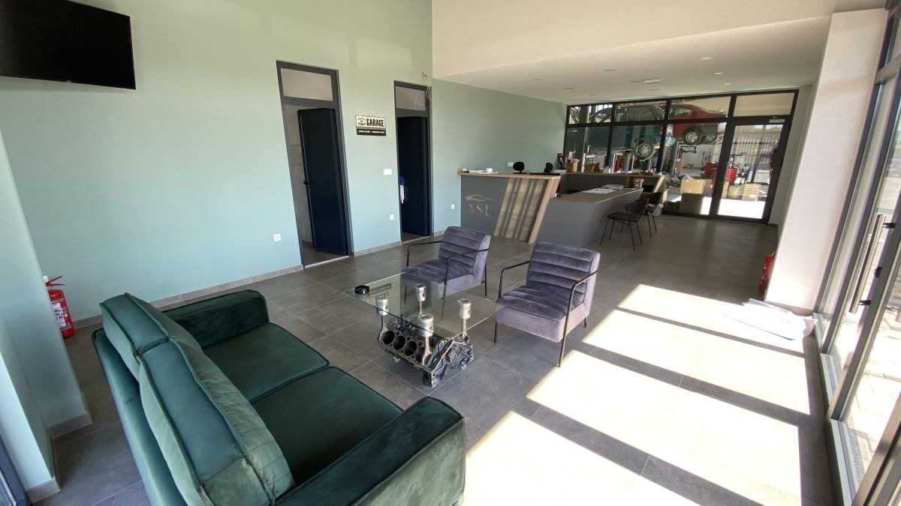
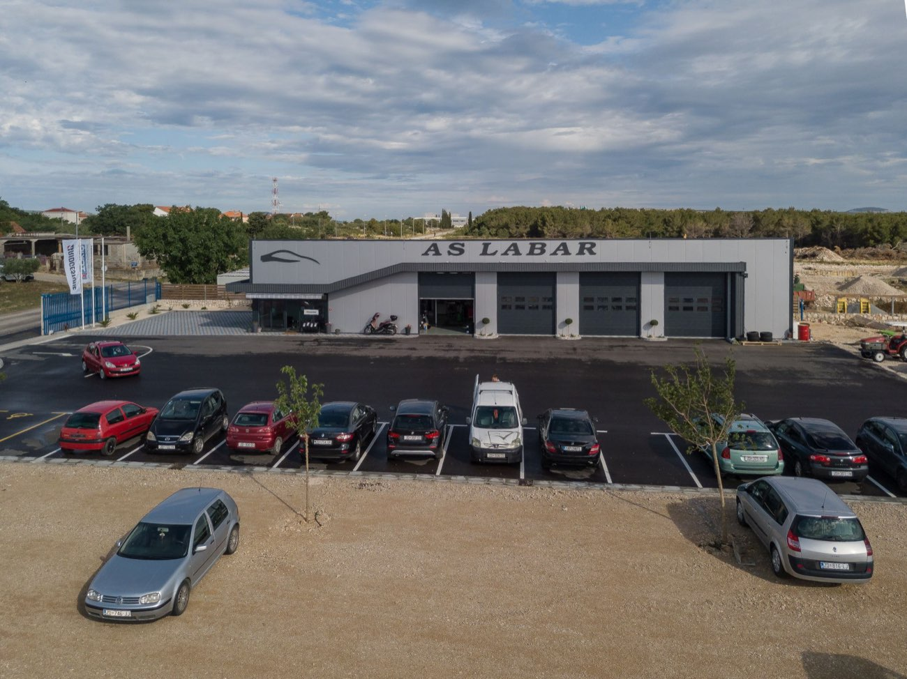
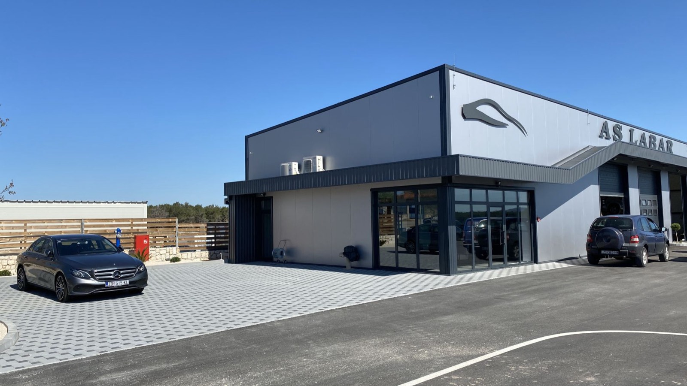
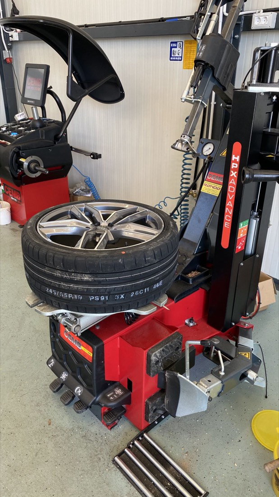
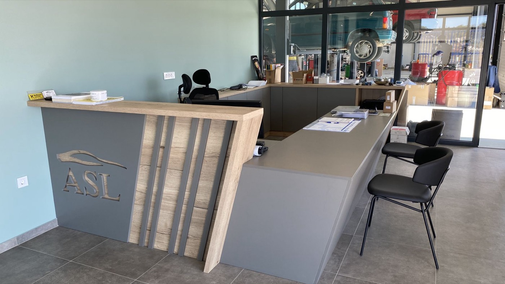
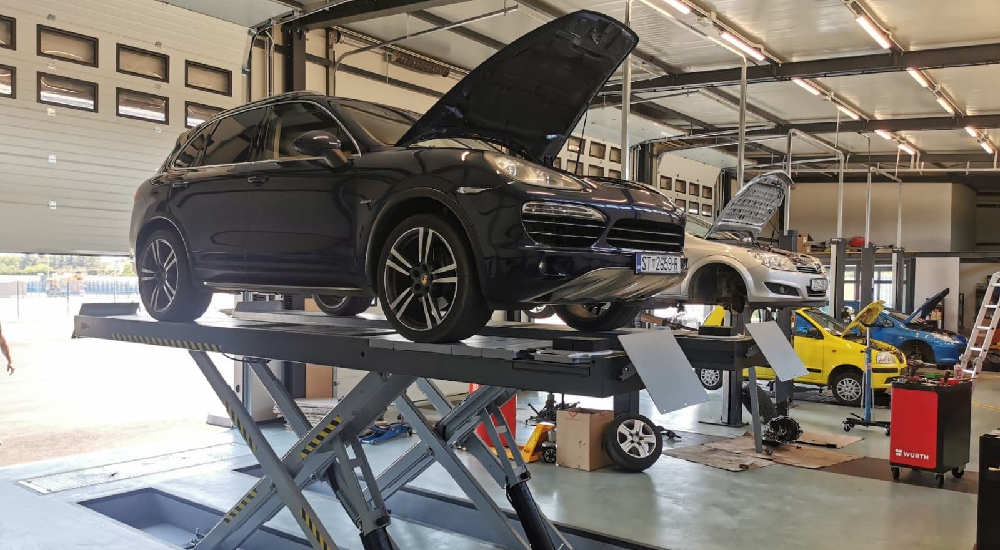
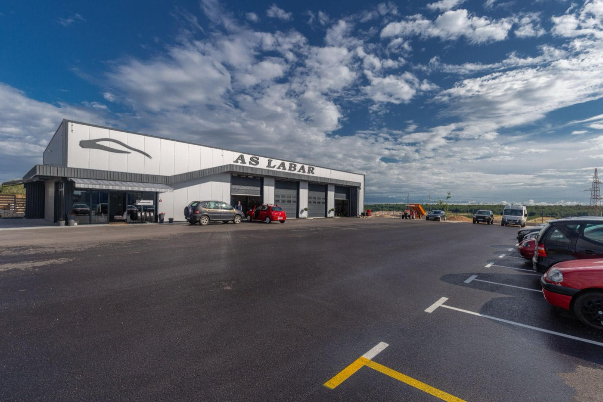

Dijagnostika
Imamo vrhunsku opremu za provjeru, dijagnosticiranje i učinkovito otklanjanje eventualnih problema.
Dijagnostika, auto klima, ulje i filteri, gume, mjenjači i akumulatori. Popravljamo domaća i strana vozila – na novoj lokaciji u Bukovačkoj ulici 19.

Od redovnog servisa do kvara koji treba pronaći – sve na jednom mjestu, u novoj radionici.
Imamo vrhunsku opremu za provjeru, dijagnosticiranje i učinkovito otklanjanje eventualnih problema.
Punjenje i servis (popravak) auto klime za osobna i teretna vozila.
Izmjena ulja te izmjena i čišćenje filtera klime i goriva.
Veliki izbor auto guma. Zamjena i balansiranje guma.
Servis manualnih i automatskih mjenjača.
Provjera, servis i zamjena vašeg akumulatora.
Dobili smo priznanje tvrtke CompanyWall za pouzdanog obrtnika za 2022. godinu – kao dokaz da se naš trud i rad isplatio, što pokazuje i sve veći broj zadovoljnih klijenata koji nam se uvijek rado vraćaju.
Vaš AS Labar
Četiri jednostavna koraka – od prvog poziva do ključeva u vašoj ruci.
Nazovite nas i recite što vozilu treba.
Zajedno odaberemo termin servisa.
U dogovoreni termin vozilo ulazi u radionicu.
Kad je posao gotov, vozilo vas čeka.



Mi smo tim koji služi našoj lokalnoj zajednici i okolnim područjima. Spremni smo riješiti popravke ili probleme vezane uz sve vrste vozila.
Servis svake godine bilježi sve veći broj zadovoljnih klijenata koji nam se rado vraćaju, kako bi njihov limeni ljubimac bio u najboljim rukama.

Uz radionicu je uređen svijetao prijemni ured s čekaonicom.
Nova zgrada u Bukovačkoj ulici: radionica, prijemni ured i prostrano parkiralište.







Nazovite nas na +385 98 1876 508 ili pošaljite upit na autoservislabar@gmail.com. Dogovorit ćemo vrstu servisa te dan i sat dolaska.
Od ponedjeljka do petka, od 8:00 do 16:00 sati.
Na novoj lokaciji u Bukovačkoj ulici 19, 23210 Biograd na Moru. Otvorite upute na Google Mapi.
Popravljamo domaća i strana vozila: osobne automobile, SUV-ove, kamione i vozne parkove. Auto klimu punimo i servisiramo za osobna i teretna vozila.
Da, u servisu imamo uređen prijemni prostor u kojem se možete ugodno smjestiti dok je vaše vozilo na servisu.
Ako imate bilo kakvo pitanje vezano za vaše vozilo, slobodno nas kontaktirajte ili posjetite.